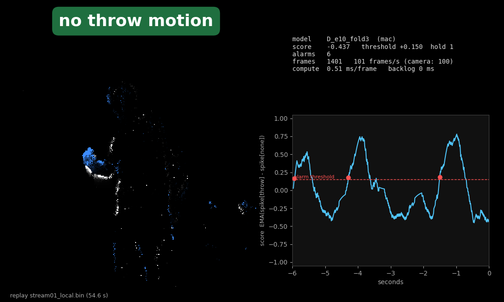

A robot dog that sees a throw coming, using an event camera and a spiking neural network running on an FPGA.
| Layer | Channels | Kernel / stride | Map |
|---|---|---|---|
| Spiking conv + BN | 16 | 5 / 2 | 40×40 |
| Spiking conv + BN | 32 | 3 / 2 | 20×20 |
| Spiking conv + BN | 64 | 3 / 2 | 10×10 |
| Spiking conv + BN | 64 | 3 / 2 | 5×5 |
| Spiking conv head | 2 | 5 / 1 | 1×1 |
5,615 clips: 2,026 throw-like and 3,589 negatives. Domain and label are mixed on purpose, so the domain alone never gives away the label.
Playing a throw backwards looked nothing like a real feint. Dropped.
Wind-up of a throw joined to a real retreat. Still separable, so kept but monitored.
Too clean and too sparse at first. A second renderer made them much closer to real events.
Early labels followed overall event activity, because the first takes were recorded class by class.
Mean recall of throw motions at 2 false alarms/min, grouped 4-fold CV on our own recordings (out of fold)
Seed spread is large (recall ±0.25), so only big gaps count. External and synthetic data clearly help on new setups; bigger backbones and longer training did not.

The current SNN runs on the FPGA on the live camera feed.
A person presses SPACE whenever it should fire. Unpressed time means: stay quiet.
Every ~30 s the A100 picks up new 10 s chunks and takes REINFORCE steps.
A snapshot loads onto the FPGA in ~3 s. Its false alarms become hard negatives.
↻ loop runs while people throw, feint, walk and pick up the ball
Pitfall: with few presses, pure RL learns to stay silent; the output rate can collapse within ~20 steps. So we watched the firing rate live and chose snapshots by A/B test on the board.
Why RL: threshold, hold and refractory make the alarm rule non-differentiable. Sampling 4 spike trains per window (leave-one-out baseline) optimises exactly what the robot reacts to.
WHAT LED HERE Six models swapped live on the board (1,062 s, 47.9 M events) kept making the same mistakes:
3 recordings (fixed and moving camera) hand-labelled into 121 windows of 3 s. Head fine-tuned, false alarms weighted ×2, readout calibrated on the fixed-point net.
Same net padded to 11 outputs, weights in Q2.6: runs on the firmware already on the board. Outputs 0/1 bit-identical to the 2-class net.
Start model for the RL loop. RL snapshots 1–470 compared live (A/B) against it; snapshot 1 won and is what runs on the Go2.
Steps 1–2 in-sample (same recordings); the A/B scores were shown live, not saved.
Event vision, a spiking network trained with people in the loop, and a robot that steps aside: all reproducible from the repo.